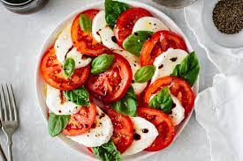

Caprese Salad Recipe

Description
Caprese salad is a classic Italian dish known for its simplicity and fresh flavors. It typically consists of ripe tomatoes, fresh mozzarella cheese, and basil leaves. The salad is often drizzled with extra virgin olive oil and balsamic glaze, seasoned with salt and pepper to taste. The combination of juicy tomatoes, creamy mozzarella, fragrant basil, and tangy dressing creates a light and refreshing salad that is perfect as an appetizer or side dish.
Ingredients
- 2 large ripe tomatoes
- 8 ounces fresh mozzarella cheese
- A handful of fresh basil leaves
- Extra virgin olive oil
- 1 can (14 ounces) diced tomatoes
- Balsamic glaze
- Salt and pepper to taste
Instructions
- Slice the tomatoes and fresh mozzarella into 1/4-inch thick slices.
- Arrange the tomato slices on a serving plate, followed by a slice of mozzarella on top of each tomato slice.
- Place a fresh basil leaf on each mozzarella slice.
- Drizzle with extra virgin olive oil and balsamic glaze.
- Season with salt and pepper to taste.
- Serve immediately as a refreshing appetizer or side dish.